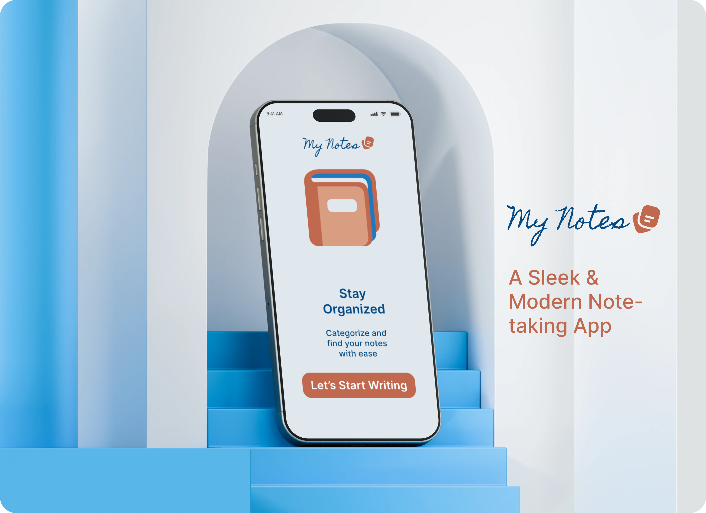
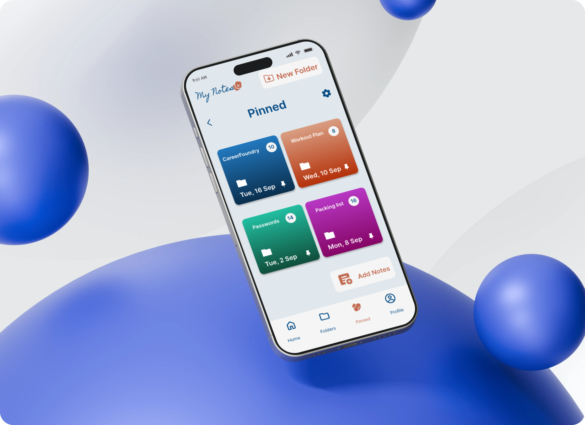
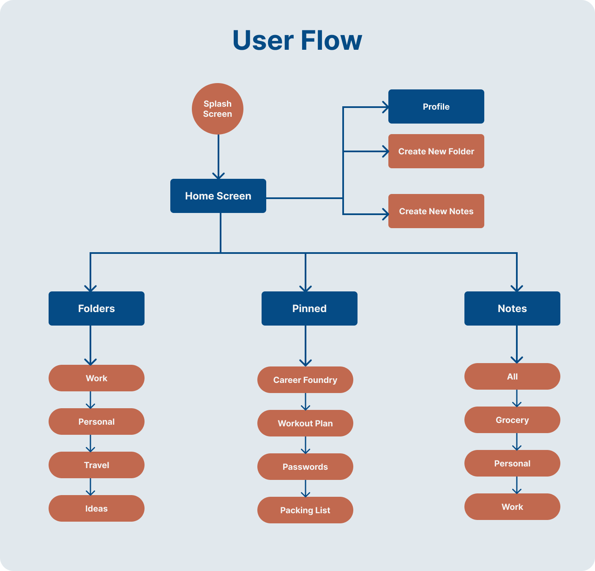
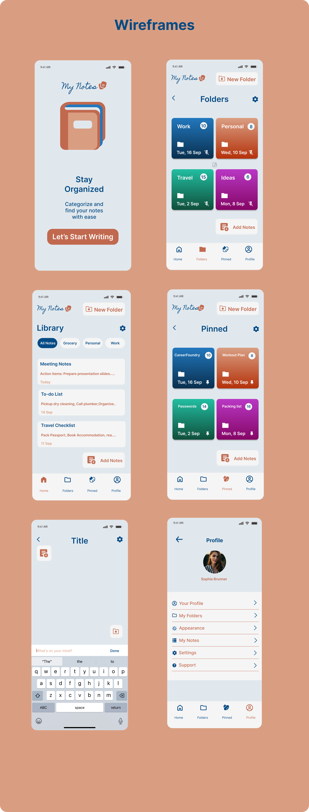
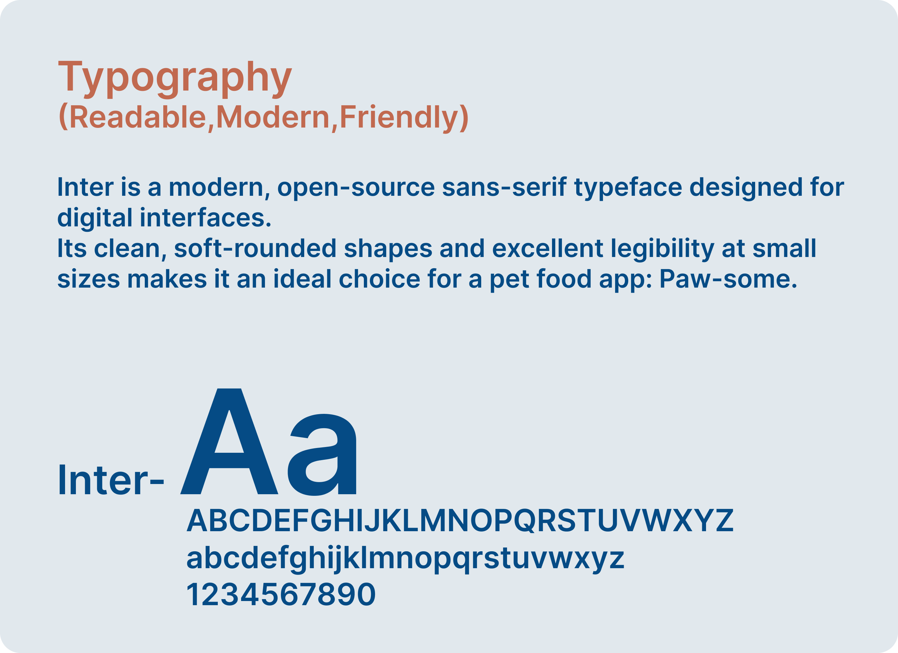
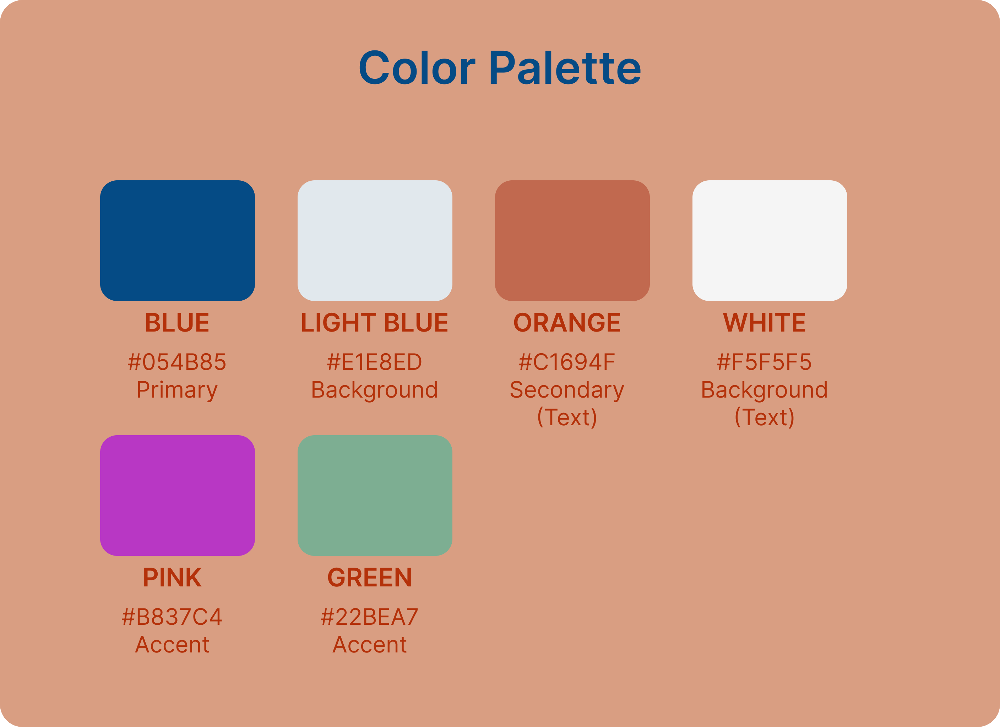

My Notes App
Project Summary
I created User flows, designed home screens and other screens with different functionalities. I designed app with sleek and modern design that provides users with dynamic experience because of its clean navigation system. I developed a consistent visual language (color palette, typography), tested a functional prototype and incorporated peer feedback.
My Role
UX / UI designer
Year
2025
Platform
IOS
Tools
During the UX/UI design process for the My Notes App, various tools were used to aid in collaboration, design creation, progress tracking, and user behavior analysis. Figma was utilized for creating wireframes and high-fidelity prototypes, InVision for interactive prototypes, Miro for brainstorming sessions and ideation process, and Lysnna for user behavior analysis.
Target Audience
Busy professionals who need a distraction-free space to jot down ideas,tasks and meeting notes. Students looking for simple tool to organize study materials and reminders.
Creative thinkers who prefer visual clarity and minimal clutter while brainstorming. Privacy-conscious users who value secure,offline-first note storage.
About the App
My Notes is a note-taking app with sleek and modern design that provides users with dynamic experience because of its clean navigation system. My Notes help users stay organized, build structured notes, categorize those in designated folders and browse through your notes with ease.
Problem
Most note taking app are either too feature-heavy or too light. Users often feel overwhelmed by cluttered interfaces or frustrated by missing essentials like tagging,synching or formatting. There's a need for a minimal yet functional app that balances simplicity with core productivity tools.
Solution
A clean, neutral interface that reduces cognitive load. Essential features like search, archiving and text editing. Offline-first architecture with optional cloud sync etc.

Design Process
I adopted the design thinking framework for the design process. This involved empathizing with users, defining the problem, ideating, prototyping, and implementing. User research and feedback helped us understand their needs and constraints, and I generated design ideas through brainstorming and collaboration. Prototypes were tested with real users to gather feedback for iterative design improvements.
User Research
- Briefing
- Competitor analysis
- User Persona
- JTBD
- User flow
Prototype
- App structure
- Wireframes
- Functional
- Prototype
Design
- References
- Visual concepts
- UI Kit
- Final Design
Testing
- User testing
- Feedback
User Flow
Users begin at a Splash Screen, tehn land on the Home screen. From Home, they can access: Profile- with options to create folders and notes. Notes-organized into categories like Grocery,Personal,Work.
Pinned notes-quick access to important items like Workout plan,Passwords. Folders-Work, personal,travel ideas. This structure supports clean navigation and efficient organization.

Final Mock-Ups


Style Guide


Iterations & Recommendations
What went well
- Built a functional prototype with clear usability improvements.
- Successfully addressed key pain points from user testing.
What could be improved
- Involving target users earlier might have been beneficial.
- Introducing tag visibility and cloud synching .
Next Steps
- I'd continue refining with Community support features
- I'd also test more adaptive UI solutions.